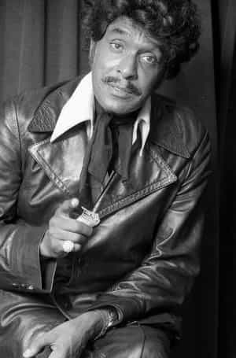
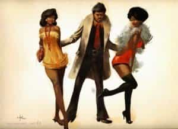

< < < Back
5 Reasons Why Black Men Don’t Study Game – Return Of Kings
“The Game is to be sold, not told.”
-Iceberg Slim
For roughly the past six years or so, I’ve been heavily studying game, or what some would refer to as pickup—the formatted study of how to “pull” women. Though I never set out to be an authority or expert on the matter, my humble missives on it have appeared in a number of places online. Like Jigga said and Cassidy reiterated, ask about me.
Part of my studies involved being part of a “lair”—a real-world location where men gather to share pickup tips, invite speakers in, and even practice on “Hired Guns”—hot women who can monetize their looks, such as strippers, barmaids, gals working at high-end mens’ shops, Instagram urban models, and the like.
Often I would be among a very few black men in attendance, the vast majority being white or Asian. Even among the small number of brothers in attendance, I was the only one who was interested in black women. It’s been my direct and indirect experience, that those brothers who do study game and pickup diligently tend to go for Beckys, Mai-Lins, and Marisols. I’m just saying.
Along with the existence of a true “Band of Brothers” vibe among the white guys who study game and pickup—they really do care about each other and want each other to succeed in getting women—I just had to ask: why don’t black men do it?
1. Because the game is to be told, not sold

Game, like many other things of great cultural relevance in American society, actually got its start among the lower classes of black American life. Perhaps the earliest accounts of game being dispensed and discussed in written form is Iceberg Slim’s “Pimp: The Story of My Life” that came out roughly a half a century ago, and is a memoir from Slim’s days as a pimp and hustler in 1930s-era Chicago.
Game was a way to manage a pimp’s stable of ladies, and the competition for them among pimps was stiff—hence the term above. As a result of that ethos spilling over into “square” life, black men as a group are reluctant to give actionable intel to other black men about picking up women.
2. Big man culture

Another reason has to do with the cultural practice of Big Manism, something that is very evident in Africa, Dominican Republic, Brazil, and other heavily black locales. What is Big Manism? It’s when a brother is, or has become, for lack of a better way of putting it, a “big man on campus type”—and as result, he not only has his run of the ladies available, but he has a surplus of them to boot. Given that this is the case, it’s understandable that they have little incentive to spread the wealth.
3. Black men don’t feel that game is worth it
If you spend any time in pickup forums, a lot of emphasis is put on the upper-tier white and Asian women. The subtitle to the pickup classic The Mystery Method is “How To Get Beautiful Women In Bed.” I’ve personally witnessed white and Asian guys pay small fortunes to learn from the masters how to get ‘er done with chicks that look they jumped off the cover of Maxim or the Victoria’s Secret runway.
Let’s be frank, gals of that caliber are few and far between in black American life; brothers ain’t gonna spend $3K USD (or more) for a weekend “bootcamp” just so they can holla at what’s on offer among American black women.
4. Anti-intellectualism and anti-counseling culture
One of the first things you immediately learn by hanging out in predominantly white and Asian pickup circles is that these dudes are generally pretty smart—they don’t call them nerds for nothing—and their approach is very IQ-intensive. Flowcharts, grids and graphs, studies, and academic rigor is the order of the day in these subcultures. Brothers simply don’t approach life that way.
Part of that has to do with straight up anti-intellectualism that is unfortunately frequently the case in black America, but part of that stems from the fact that being a nerd simply don’t have the same cultural pull or force in black American life as it does in white and Asian American cultural life. Sistas ain’t into nerds like that, bottom line. Furthermore, game forces a great deal of introspection, and black folks in general don’t do the counseling thing; most of us typically consider that something for white folks and uppity “bougie” blacks.
5. Pride and shame

Pride and shame are big motivators in black culture. In order to address a problem, you have to admit that you have one in the first place, and because of the Mandingo Myth, every brother is under incredible pressure to give everyone the impression that they are what Nas’ baby mama Carmen Bryan referred to as a “sexual warrior.” Simply put, white and Asian guys have the cultural space to come forward and admit that they need help in these areas that black men, on a whole, simply don’t.
In summation
You have no idea how many brothers I have talked to “on the down low” who come to me and express a desire to learn more about game. They do not want to be publicly identified. Think about that for a moment.
The reason why I’m passionate about this issue is multifaceted; part of it has to do with the fact that there are a lot of brothers who really do need help in one of the most important areas of their lives, and there is no interest or desire culturally to assist them. This goes on to fuel the current “Where are the good Black men?” trope that so many black women complain about.
There’s no silver bullet here, but I am convinced that if more brothers actually knew how to go about being social and getting the ladies, some of the tensions in black American life would be eased. And I’m committed to doing my part to get the word out
Read More: The Pros And Cons Of Game For Black Men In The West


{kind=link}
{kind=link}
{kind=link}